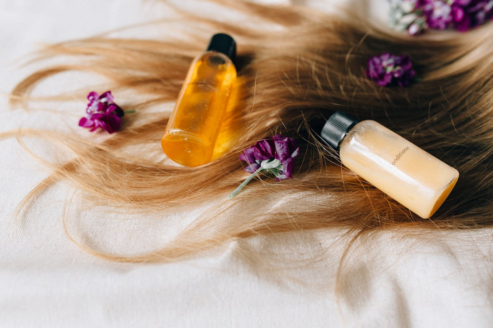
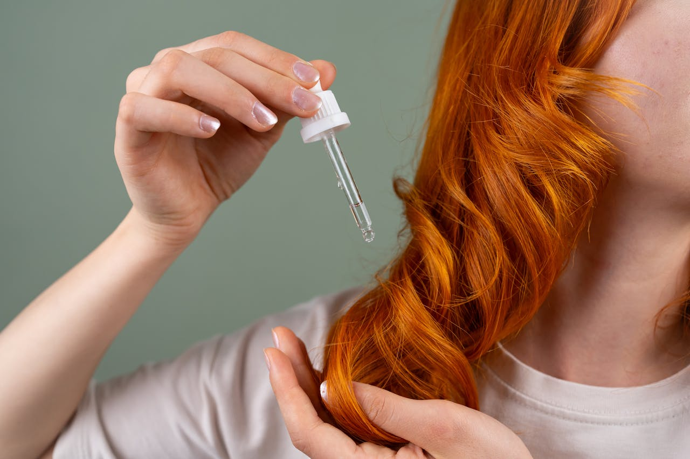

Cada tipo de cabelo exige ingredientes naturais adequados
Cada cabelo tem necessidades únicas. Antes de formular, é essencial entender o fio e o couro cabeludo. Escolher os ingredientes certos garante produtos naturais eficazes e personalizados.
Cada cabelo tem necessidades únicas. Antes de formular, é essencial entender o fio e o couro cabeludo. Escolher os ingredientes certos garante produtos naturais eficazes e personalizados.
O couro cabeludo também é pele e precisa de atenção. Quando está desequilibrado, pode causar queda, caspa ou oleosidade. Entender sua fisiologia ajuda a formular produtos naturais que tratam a raiz do problema e não apenas os sintomas.
Champôs convencionais usam tensioativos agressivos que podem danificar o cabelo. Na cosmética capilar natural, é essencial conhecer os tipos de tensioativos, suas combinações e como equilibrar limpeza, suavidade e hidratação para obter melhores resultados.
Cuidar do cabelo vai além da lavagem: é nutrir, proteger e reparar danos. Com manteigas vegetais, óleos nutritivos, proteínas, extratos botânicos e outros ativos naturais, criamos cosméticos capilares eficazes, limpos e éticos.



